К 300-летию К. Донелайтиса · 7–8 декабря 2013 года
Путешествие к Донелайтису
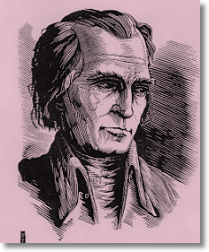
Отправляясь в путешествие мы порой не знаем , что ждёт нас впереди. Также и группу детей из "Школы будущего" посёлка Большое Исаково ждали необыкновенные открытия и сюрпризы, которых они совсем не ожидали в своём путешествии на самый юго-восток Калининградской области, по местам, где жил и творил классик литовской поэзии Кристионас Донелайтис.
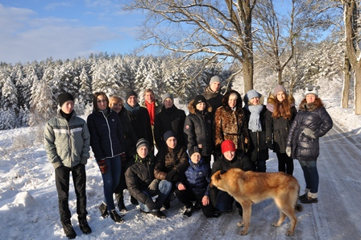
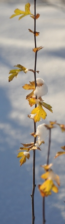
Путешествие пролегало через город Гусев, неподалёку от которого находилось местечко Лаздинеляй, где в 1714 году родился поэт. И первая большая остановка состоялась в мемориальном музее К. Донелайтиса в Чистых Прудах. Он расположился в старой востановленной кирхе, где когда-то в XVIII веке поэт служил священником. Именно здесь Кристионас Донелайтис создал своё знаменитое произведение "Времена года", включённое в список всемирного наследия ЮНЕСКО. Здесь он прожил большую часть своей жизни, возведя этот храм, под сводами которого и был похоронен в 1780 году. В ходе экскурсии по музею, участники поездки узнали о жизни поэта, его окружении и заботе о людях. Здесь же дети прочли несколько отрывков из поэммы "Времена года".
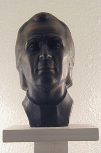
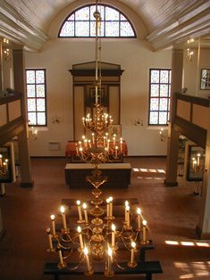
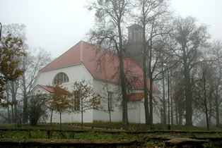
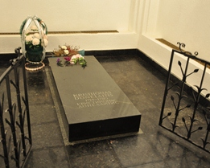
В Виштынецком эколого-историческом музее
Следующая остановка ждала путников в другом музее. Неподалёку от Чистых Прудов, в посёлке Краснолесье находится наш Виштынецкий эколого-исторический музей, который совместно с Калининградским союзом Антропос и организовал эту поездку. Здесь к путешественникам присоединились местные дети из посёлка Краснолесье, с которыми школьники из Большого Исаково поделились своими впечатлениями уходящего дня. Но самое интересное ждало всех вперди. Выбрать понравившиеся строки из поэмы К. Донелайтиса "Времена года" и прочитать их было одним из заданий. Конечно, стихи читали в основном на русском языке, но также строки поэмы прозвучали на литовском и немецком языках. Также от Клауса Харера, сотрудника Немецкого форума восточноевропейской культуры, дети узнали, чем необычна поэма "Времена года". Вечером можно было ощутить сказочную обстановку музея, освещённого свечами, почти как во времена К. Донелайтиса, когда люди не знали об электрическом свете. Но главное чудо случилось утром, когда выпал первый снег, и все участники оказались в настоящей зиме! Вот так, два времени года за два дня поездки. Разве не чудо!
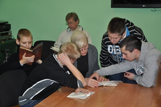
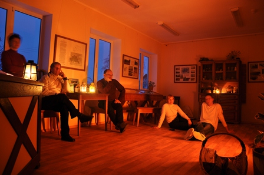
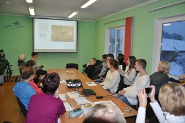
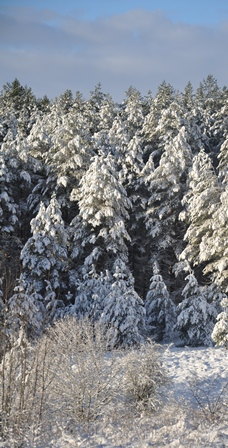
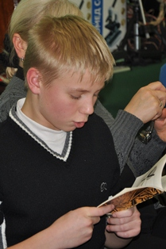
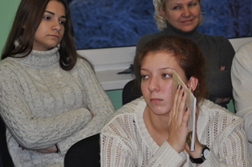
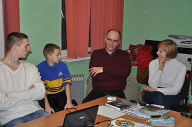
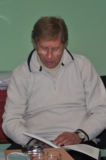
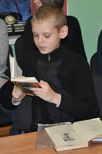
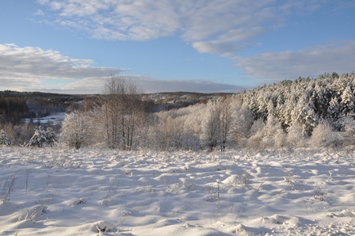
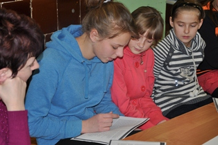

 На страницу о К. Донелайтисе, поэма «Времена года»
На страницу о К. Донелайтисе, поэма «Времена года»
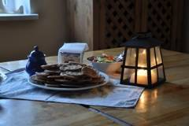
Празднование юбилея К. Донелайтиса в Краснолесье, 1 января 2014 г.